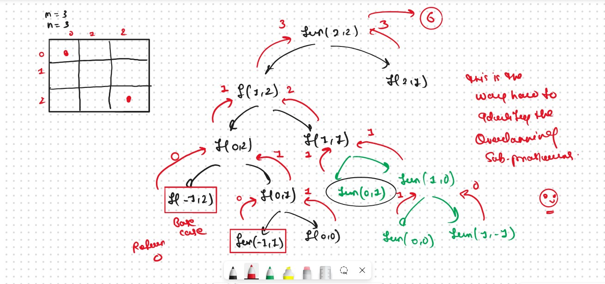
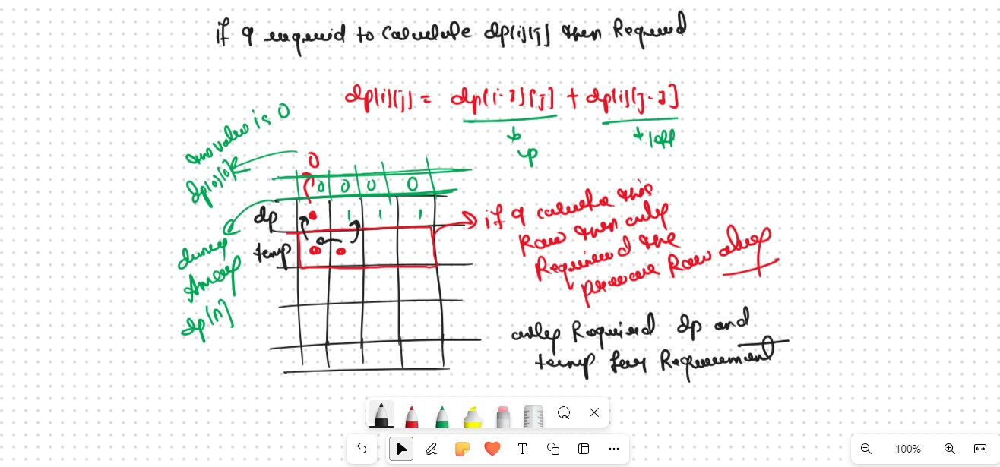

JB TAK FODEGA NHI .... TB TK CHODEGA NHI .... (MAANG)


DPL8 Grid Unique Paths I
In this Problem, we will solve the most asked coding interview problem: Grid Unique Paths I
Given two values M and N, which represent a matrix[M][N]. We need to find the total unique paths from the top-left cell (matrix[0][0]) to the rightmost cell (matrix[M-1][N-1]).
At any cell we are allowed to move in only two directions:- bottom and right.
As we have to count all possible ways to go from matrix[0,0] to matrix[m-1,n-1], we can try recursion to generate all possible paths.
Recursice Approch
Steps to form the recursive solutionStep 1: Express the problem in terms of indexes: (i->row,j->coll)
We can define the function with two parameters i and j, where i and j represent the row and column of the matrix.

Our Base Case is
The Recursive Function is
Step 2: Try all the choices to reach the goal. & Try out all possible choices at a given index.
Recursion Tree 
.png)
.png)
Sb Mai He Kru ...
Khud Bhi Kr le Khuch ..... Nalayk
Time & Space Complexity
Time Complexity: O(2^N)Reason: Exponential Time we find out the all the Possible Path
Space Complexity: O(N)
Reason: We are using a recursion stack space(O(N))
Memoization Approch
If we observe in the recursion tree, we will observe a many number of overlapping subproblems. Therefore the recursive solution can be memoized for to reduce the time complexity.
Steps to convert Recursive code to memoization solution:
.png)
.png)
Sb Mai He Kru ...
Khud Bhi Kr le Khuch ..... Nalayk
Time & Space Complexity
Time Complexity:O(N*M)Reason: At max, there will be M*N calls of recursion..
Space Complexity: O((N-1)+(M-1)) + O(M*N)
Reason:We are using a recursion stack space: O((N-1)+(M-1)), here (N-1)+(M-1) is the path length and an external DP Array of size ‘M*N’.
Tabulation Approch
Tabulation is a ‘bottom-up’ approach where we start from the base case and reach the final answer that we want and Memoization is the Top-down Approch.Steps to convert Recursive Solution to Tabulation one.
.png)
.png)
Sb Mai He Kru ...
Khud Bhi Kr le Khuch ..... Nalayk
Time & Space Complexity
Time Complexity: O(M*N)Reason:There are 2 nested loops
Space Complexity: O(N*M)
Reason: We are using an external array of size ‘M*N’’.
Space Optimization
If we closelly Observed if any Tabulation Approch we used the Some Limited Stuff like: dp[i][j] = dp[i-1][j] + dp[i][j-1] for the finding the our ans then definetly here Spaced Optimization is Possible in that types of Problems. Always Remember
Golden Rule
.png)
.png)
Sb Mai He Kru ...
Khud Bhi Kr le Khuch ..... Nalayk
Time & Space Complexity
Time Complexity:O(M*N)Reason: There are three 2 nested loops
Space Complexity: O(N)
Reason: We are using an external array of size ‘N’ to store only one row.